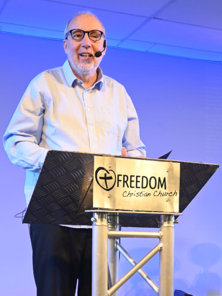
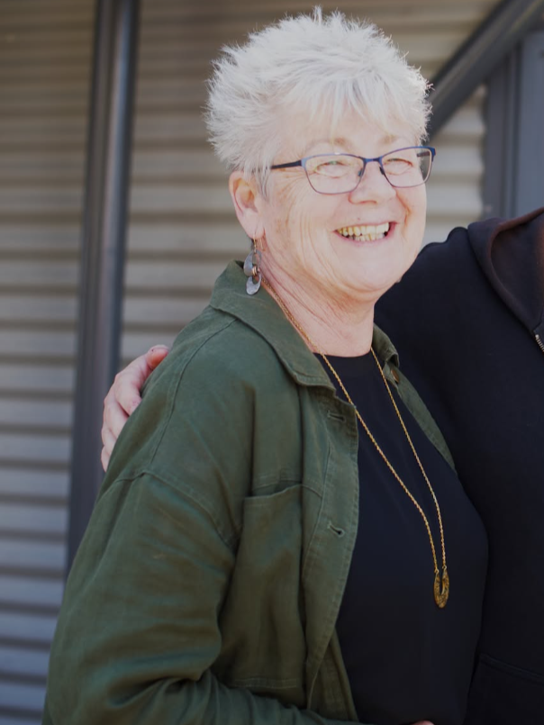

A multicultural and multi-generational family.

Born in England, Ray moved to Israel in 1983 where he started studying for the ministry. Ordained in 1989, he moved to New Zealand in 1992. Ray holds a master's degree in theology from Otago University and lectures at Alphacrusis New Zealand.

Originally from The Netherlands, Carolien moved to NZ at age 14. Ordained in 2003 with the Assemblies of God, she works extensively with youth and children with extra needs, and speaks nationally on child abuse awareness.
We are reasonably informal and try to stay up-to-date in our worship style. Whether you've grown up in church or are just checking things out for the first time, you are welcome here.